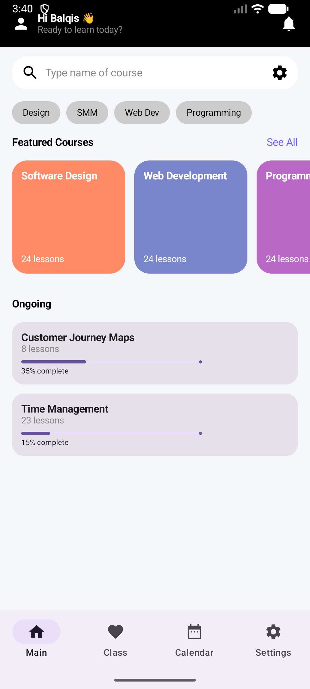

Laboratory Layouts & Implementations
LAB 1
User Interface (UI) Development
Basic Jetpack Compose UI components.
Reflection
Through this lab, I learned how to build simple user interfaces using composable functions and understand the structure of modern Android UI development. I practiced using basic layout elements such as Column, Row, and Text, which helped me gain confidence in building clean and responsive interfaces using Jetpack Compose. This lab also improved my understanding of declarative UI design and how UI elements are structured in Android applications.

LAB 2
User Interaction & States
State management using Compose.
Reflection
Through this lab, I learned how state management works in Jetpack Compose using mutable state and reactive UI updates. I understood how changes in state automatically update the UI, which is a key concept in declarative programming. This exercise helped me improve my ability to manage user interactions and dynamic content in Android applications more effectively.


LAB 3
Material Design Components
Material 3 theming system.
Reflection
Through this lab, I learned how to apply Material 3 design principles in Android applications using Jetpack Compose. I explored how theming systems work, including color schemes, typography, and component styling to create a consistent and modern user interface. This lab helped me understand the importance of design systems in building visually appealing and user-friendly mobile applications.


LAB 4
Navigation Flow Architecture
Multi-screen navigation system.
Reflection
Through this lab, I learned how to implement multi-screen navigation in Android applications using Jetpack Compose Navigation. I gained understanding of how different screens are connected and how data can be passed between them. This exercise improved my ability to design structured navigation flows, making the user experience more organized and seamless when moving between screens.


LAB 5
Local Architecture & Room DB
Local data persistence using Room Database.
Reflection
Through this lab, I learned how to implement local data storage in Android using Room Database. I understood the concept of persistence, entities, DAO, and database structure, as well as how data is stored and retrieved efficiently in an offline environment. This exercise improved my understanding of local architecture and strengthened my skills in building applications that can function without constant internet connectivity.